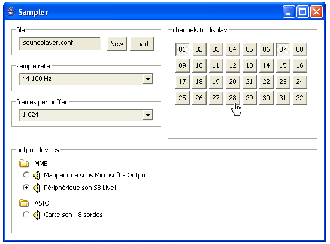
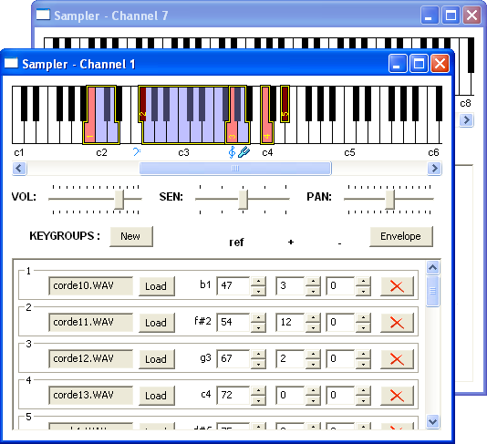
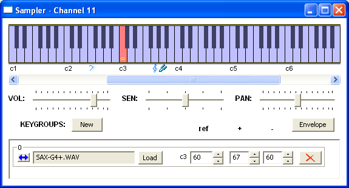
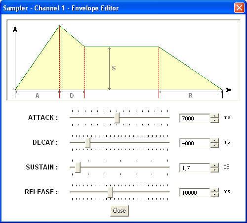

The sampler allows to associate sounds in WAV or AIFF audio format with one or more MIDI notes, so that when the note is emitted, the associated sound (called sample) is played.
You can create or load an existing configuration file that contains a list of these associations.
Stereo or multitracks output devices are supported: you can choose your device, set the sample rate and the buffer size.
32 channels are available for editing samples associations.

Each association is built with a keygroup. Each keygroup contains a reference note associated with the original sample, and a set of higher and lower notes corresponding to the same sample but having a different pitch.
WARNING: keygroups can NOT intersect!
The editor allows to build many keygroups in any channel, by using the New button or by using drag-and-drop with audio files.
Every changes are instantaneously saved in the configuration file and visible in a keyboard viewer. Manual modifications of this configuration file are disadvised.
You can set for each channel the volume, the velocity sensitivity, the ADSR envelope, and depending on the device you chose: either an output track (multitracks mode) or the panoramic level (stereo mode). Just double-click if you wish to reset the velocity sensitivity or the panoramic level to the default center value.

The keygroup can easily be extended to the whole keyboard by clicking on the left-button in the list.

The envelope editor allows to set the four ADSR parameters and to visualize the envelope shape.
WARNING: there is an incompatibility with drivers displaying a popup when their device is not connected (MOTU for example), that crashes Elody.